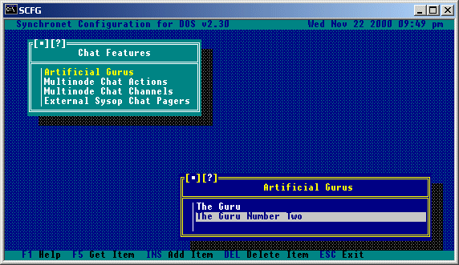
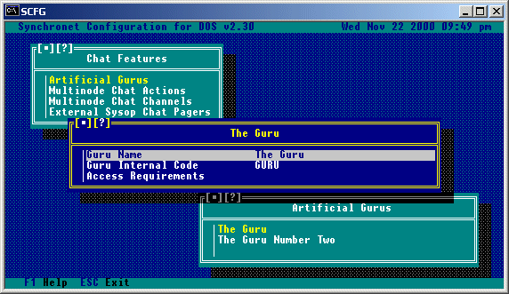
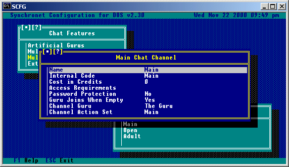
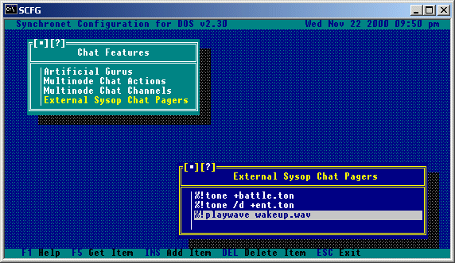
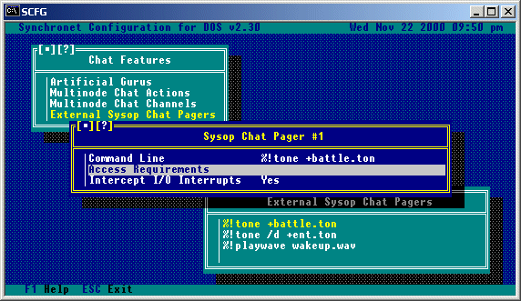

Selecting the Chat Features option from the SCFG will bring you to the following sub-menu, an explanation of the options shown here follow.
This selection will give you a sub-menu with a list of available artificial gurus, here you can insert and delete gurus.
 Selecting a guru from the menu will bring you to a menu allowing you to configure that guru.
 Guru Name: The name users will see when chatting with this artificial guru. Guru Internal Code: This is an 8 character code used internally by Synchronet and should be unique for each guru. This is also the filename which will be used for the intelligence engine for this guru (with the .DAT extension, located in your CTRL directory). See the section on customization for information on customizing chat gurus. Access Requirements: Only users meeting the criteria set here will be able to chat with this guru.
Selecting this option will show a list of available chat action sets where you can insert and delete action sets. Selecting an action set from this menu will display a list of the actions contained within that set. Synchronet comes with a default chat action set, which you can modify, or use as a reference for creating your own action set. Each command response should have two '%s' fields contained in the line, the first will be replaced with the name of the user performing the action, the second with the name of the user to which the action is directed.
Selecting this option will give you a sub-menu. An example of how a chat channel might be set up, along with the options available, is shown:

Name:
This is the name of this chat channel, and what will be displayed to
users when viewing a list of available chat channels.
Internal Code:
This is an internal code for SBBS to distinguish this chat channel from
the others on the system. This must be a unique name of up to 8 valid
DOS filename characters.
Cost in Credits:
This is the amount of credits which will be deducted from the users
account when joining this particular chat channel.
Access Requirements:
A user must meet the criteria set here in order to be able to use
(or even see) this chat channel.
Password Protection:
If you wish to allow users to be able to lock this channel with a
password (only users knowing this password can enter the channel), you
should set this option to Yes.
Guru Joins When Empty:
Set this option to Yes to have the selected chat guru enter this chat
channel when there is only one user in the channel.
Channel Guru:
This is the guru which will join this channel (if the above option is
set to yes). Selecting this option will give you a list of available
chat gurus to choose from.
Channel Action Set:
This is the chat action set which will be available to users in this
channel. Selecting this option will give you a list of available
chat action sets.
This option allows for sysops to have custom chat pages (external to what is available in Synchronet). Sysops can have .TON files played when certain or all users page, or if a sound card is installed, the sysop may have a .WAV or .VOC file play. Selecting this option will give you a list of currently configured chat pagers.
 Selecting a pager from the above menu will give you other options for this chat pager.
 Command Line: This is the command line necessary to invoke the chat pager. Access Requirements: This is the list of criteria a user must meet for this pager to affect them. Intercept I/O Interrupts: If the chat pager specified produces screen output that the user should see (or a series of beeps that the user should hear), this option should be toggled to Yes.
Copyright © 2000 by Rob Swindell
Synchronet BBS Software (Synchronet)
Version 3 is comprised of several documentation,
library, executable, and source code
files, all of which are covered by the
GNU General Public License with the exception of the following portions
covered by
the GNU Lesser General Public License:
SMBLIB and XSDK.
Synchronet Version 2 (for DOS and OS/2) and its source code was released to the
Public Domain by Digital Dynamics
in 1997 and remains Public Domain software today.
Synchronet Version 3 is not Public Domain software.
Rob Swindell
PO Box 501
Yorba Linda, CA 92885
http://www.synchro.net
For the complete Copyright Information please read the Copyright Documentation .